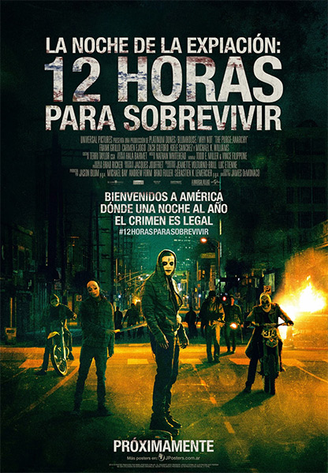

The Purge 2
|

|
Detalles
El gobierno autoriza una "purga" anual de doce horas, durante la cual cualquier crimen es legal, incluso el asesinato. Esto para mantener la criminalidad baja el resto del año. Una joven pareja lucha por vivir en las calles luego de que su auto falla poco antes de que comience la purga.
|